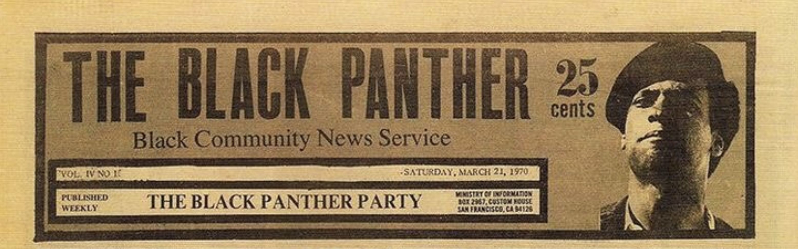

Douglas asked to join the Black Panther Party (BPP) in 1967 after meeting co-founders Huey P. Newton and Bobby Seale at the Black House, a political/cultural center in San Francisco created by author Eldridge Cleaver, playwright Ed Bullins, and Willie Dale.
“I (Douglas) was drawn to it (the Black Panther Party) because of its dedication to self-defense. The Civil Rights Movement headed by Dr. King turned me off at that time, for in those days non-violent protest had no appeal to me. And although the rebellions in Watts, Detroit, and Newark were not well organized they did appeal to my nature. I could identify with them.”
Emory Douglas
When discussing newspaper The Black Panther, formerly known as Black Panther Community News Service, Douglas mentioned to the BPP co-founders that he could help improve the look of the paper.
Douglas became the Revolutionary Artist and Minister of Culture for the BPP in 1967. He redesigned The Black Panther and switched it to web press, which allowed for colored printing and graphics. Here, Douglas developed iconic images that branded the BPP: the depiction of policemen as bloodied or hanged pigs, as protest against police brutality of African Americans, and imagery in line with the Party's 10-Point program. Douglas illustrated BPP's social services and decent housing. In addition, Douglas aligned the BPP with "Third World liberation struggles" and anti-capitalist movements in the edition of January 3, 1970, which shows an impaled pig dressed in an American flag with guns pointed at it, saying things like "Get out of the ghetto" and "Get out of Africa".
In 1970, the BPP shifted their stance to emphasize survival programs as opposed to violence.[citation needed] With that, Douglas's imagery changed as well, showing African Americans receiving free food and clothes. They promoted free breakfast programs, free health clinics, free legal aid, amongst other things. These programs were considered part of their revolutionary tactic. In response, the FBI cracked down on the cause even more, until it inevitably brought it to an end in 1980.[citation needed] However, their ideology is still alive today.
In 2007, the San Francisco Chronicle reporter Jessica Werner Zack reported that he "branded the militant-chic Panther image decades before the concept became commonplace." He used the newspaper's popularity to incite the disenfranchised to action, portraying the poor with genuine empathy, not as victims but as outraged, unapologetic and ready for a fight."

In addition to the paper, Douglas designed postcards, event flyers, and posters that were meant as recruitment tactics as well as a method of spreading the BPP ideology and creating the impression that there was mass support of the cause. Douglas recalled, "After a while it flashed on me that you have to draw in a way that even a child can understand to reach your broadest audience without losing the substance or insight of what is represented." (Stewart, 2011).